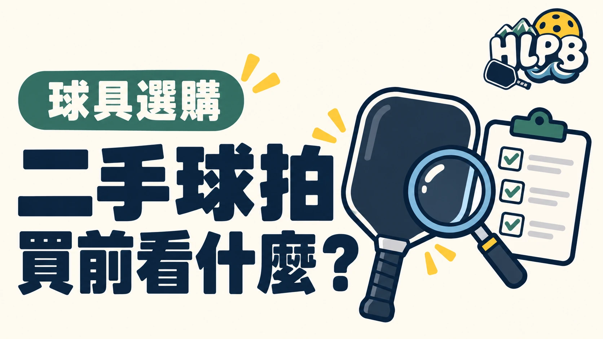

二手拍值得考慮，但不能只看原價和折扣。照片上的外觀，無法交代整支球拍的使用狀況。
付款前先問清楚
| 要確認的資料 | 為什麼要問 |
|---|---|
| 完整型號與版本 | 避免同名不同版本、厚度或拍型買錯 |
| 原購買通路與日期 | 了解來源，核對購買證明 |
| 使用狀況 | 是否有碰撞、維修、改裝或已知異常 |
| 拍面、邊框與握柄近照 | 不只看一張遠距離照片 |
| 試打與交易條件 | 確認是否能檢查，以及發現問題如何處理 |
照片之外，還有哪些問題要問？
收到照片後，不要只找刮痕。也可以請賣家說明：是否有鬆動、異音或明顯不同的擊球感。資訊有疑慮，就先停止交易，不用急著猜原因。
二手拍還有保固嗎？
保固不能直接沿用原買家的說法。有些品牌只保障原始購買者，例如 JOOLA 美國與加拿大的保固條款就有這項限制；臺灣購買仍需核對當地通路條件。
二手價格是否划算，應該一起考慮來源、狀況、售後與能不能試打。不是「原價很高」就一定值得買。
二手價格要連同後續支出一起算
先把成交價、運送費，以及已知需要更換的握把或配件列出來，再和來源清楚的新拍比較。不要把新拍原價直接當作二手價值；目前狀態、可否檢查與售後條件，才會影響這筆交易對自己的意義。
拍面、拍緣與握柄，分開檢查
請賣家提供清楚近照，並說明是否有鬆動、碰撞、維修或加配重。外觀磨痕和內部狀態是不同問題，照片無法排除全部異常。若能當面試打，先核對是否就是照片中的球拍，再查看握柄、邊框及擊球反應；不要自行用拆解方式驗拍。
| 觀察到的資訊 | 可以先做什麼 | 仍無法直接保證 |
|---|---|---|
| 有原購買證明 | 核對購買通路、日期與型號 | 保固一定可轉給第二位買家 |
| 外觀照片很新 | 確認拍面、邊框及握柄細節 | 內部結構沒有問題 |
| 願意提供使用紀錄 | 確認練習頻率及已知維修改裝 | 剩餘可用時間有固定期限 |
哪些資訊不清楚，就值得先停一下？
型號版本對不上、已知異常沒有說明、拒絕提供基本照片，或保固承諾與品牌條款不一致時，先釐清再付款。二手買拍的目的，是以可接受的風險取得合適器材，不是只看折扣。不要因為售價便宜，就跳過原本買新拍也會做的規格比較。
來源：JOOLA 美國與加拿大保固條款 ↗。資料核對：2026/10/19；選購檢查建議由 HLPB 編輯整理。
最後查證：2026-10-19｜資料來源：HLPB 編輯整理與正文所列官方資料
返回文章列表